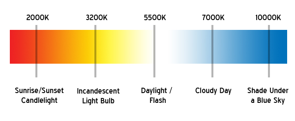
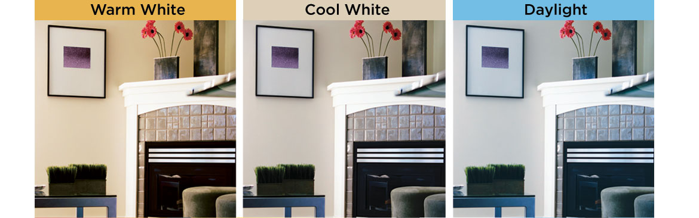

„You can really feel the difference in your mood after changing to warm mode in the evenings.“
Stefan Karolcik, CEO of VESK embedded
But what does it mean changing colour temperature?
Colour temperature is a way to describe the light appearance provided by a light bulb (lamp). It is measured in degrees of Kelvin (K) on a scale from 1,000 to 10,000. A lamp’s colour temperature lets us know what the look and feel of the light produced will be.

And what colour temperature is right for you?
At the lower end of the scale, from 2000K to 3000K, the light produced is called “warm white” and ranges from orange to yellow-white in appearance. It makes us feel very comfortable in our home, therefore it is suitable in bedrooms, living rooms, restaurants etc.
Colour temperatures between 3100K and 4500K are referred to as “cool white” or “bright white.” Light bulbs (lamps) within this range will emit a more neutral white light and may even have a slightly blue tint. Studies show that working under these lighting conditions makes us very productive especially for work during the night, it feels as if we were studying during the day. It is recommended to use for studying, in the offices, bathrooms etc.
Above 4500K brings us into the “daylight” colour temperature of light. Light bulbs (lamps) with colour temperatures of 4500K and above will give off a blue-white light that mimics daylight. This colour temperature will make you even more focused and it is suitable for reading and task lighting.

Images and paragraphs sourced from: Westinghouse Electric Corporation, URL